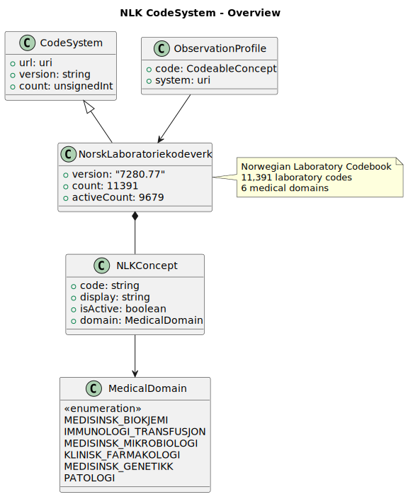
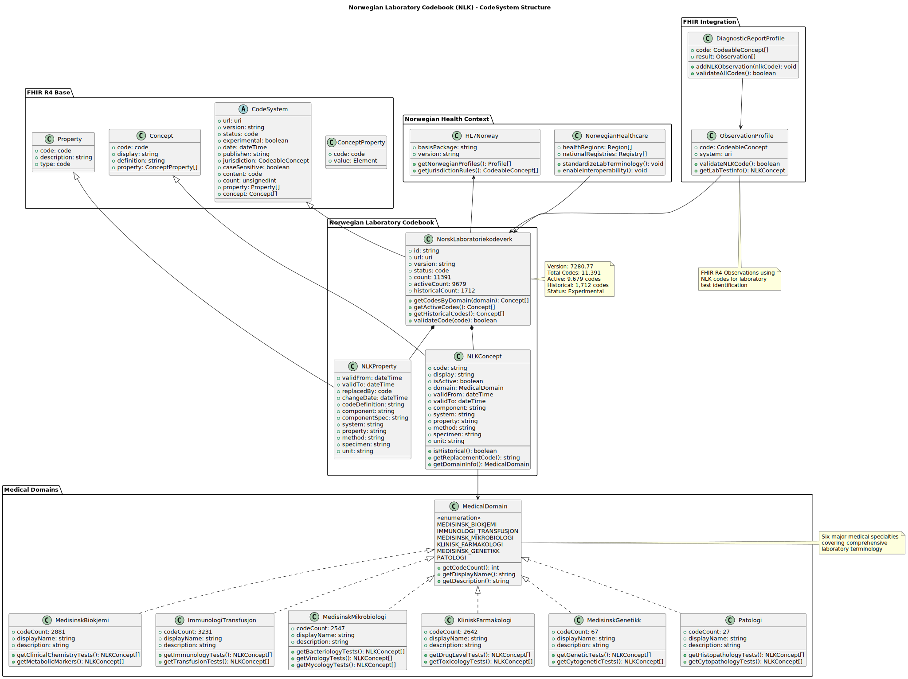

Links: Table of Contents | QA Report
This fragment is not visible to the reader
This publication includes IP covered under the following statements.
| Type | Reference | Content |
|---|---|---|
| web | github.com |
|
| web | github.com |
IG © 2025+ Espen
. Package hl7.fhir.no.nlk-test#0.2.2 based on FHIR 4.0.1
. Generated 2025-09-24
Links: Table of Contents | QA Report |
| web | github.com | Repository : GitHub - nlk-test |
|
nlk-overview.svg  |
|
nlk-test.svg  |